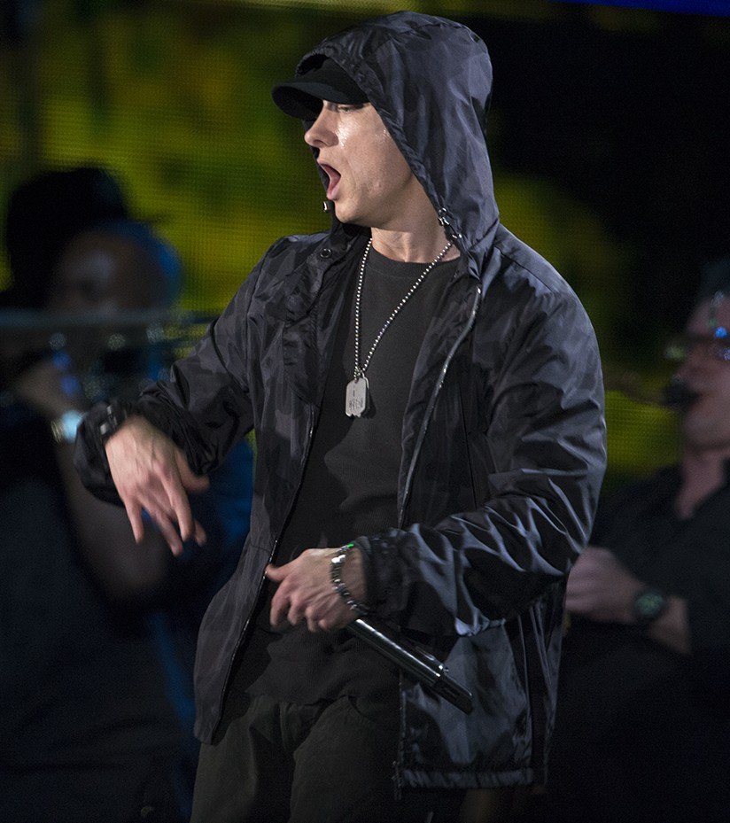
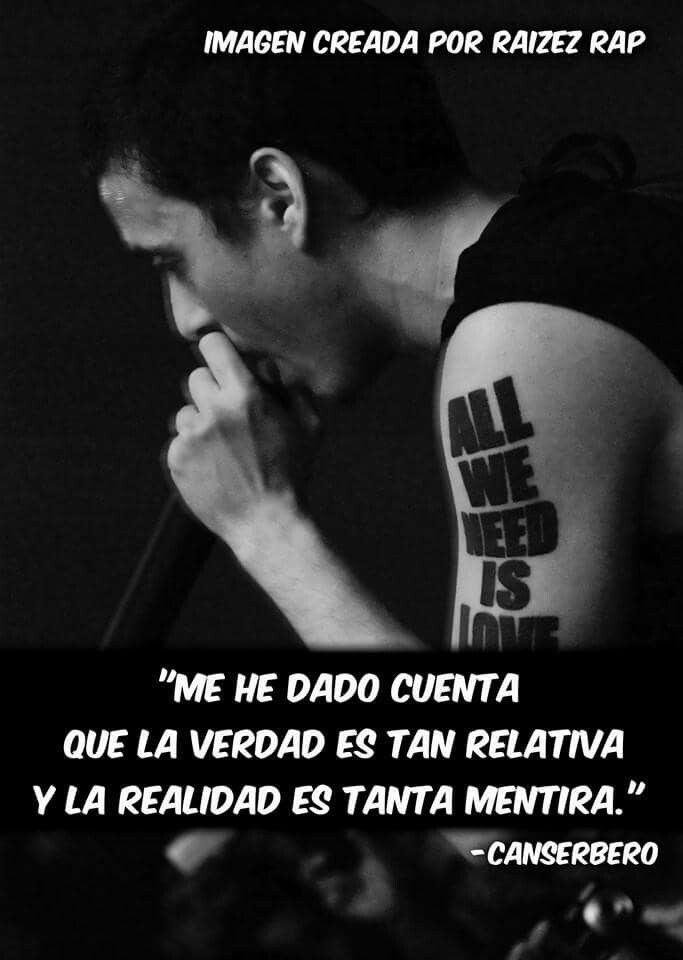

Estos raperos marcan tendencia en el HIP HOP por sus grandes producciones y letras reales.
Marshall Bruce Mathers III nacido en Joseph,Misuri; el 17 de octubre de 1972, conocido por su nombre artistico Eminem es un rapero, productor discografico y actor estadounidense.

Tupac Amaru Shakur tambien conocido como 2Pac, Makaveli o simplemente Tupac, fue un rapero, actor, poeta y activista estadounidense. Ha vendido entre 75 y 100 millones de discos en todo el mundo
Tirone Jose Gonzalez Orama, mejor conocido por su nombre artistico Canserbero, fue un rapero, compositor y activista social venezolano. Fue uno de los interpretes mas significativos del rap independiente en su pais de origen y en America Latina.

Estos tres grandes exponentes del RAP siempre estaran en el corazon de sus fanaticos por sus letras concientes.